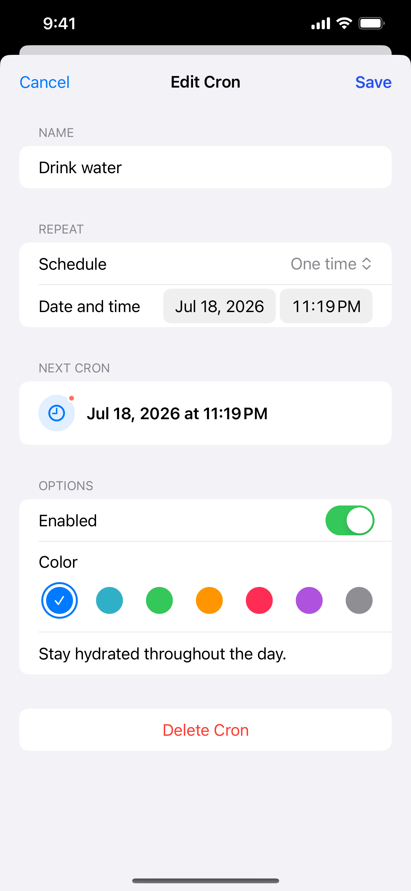
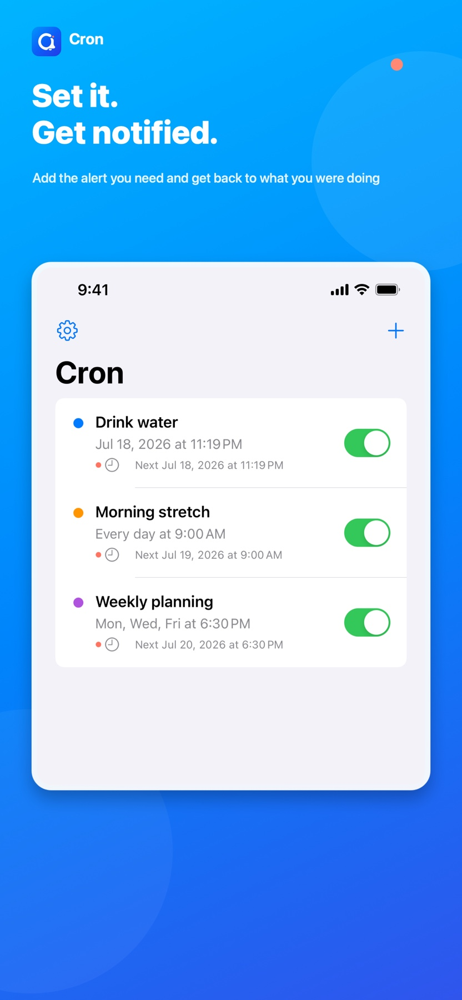
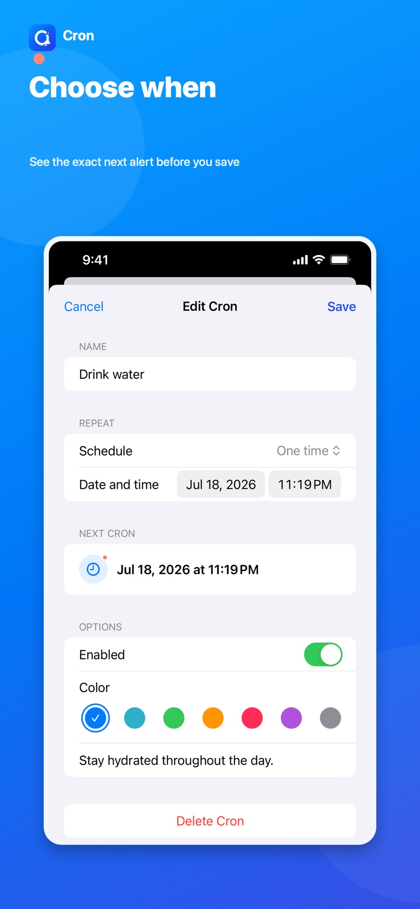
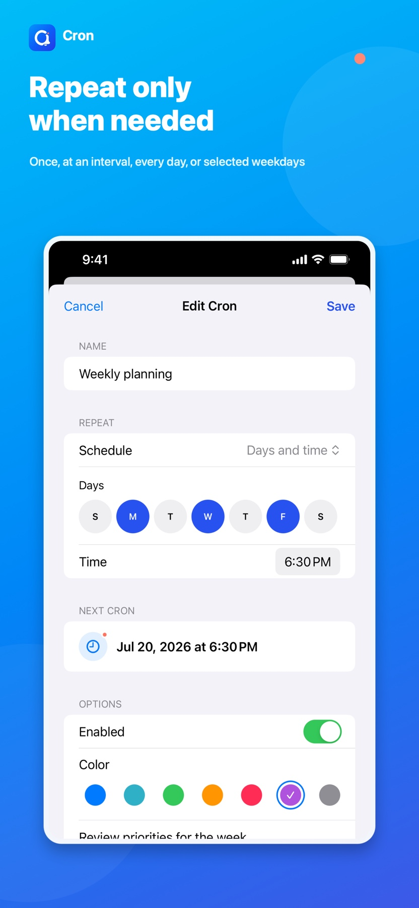
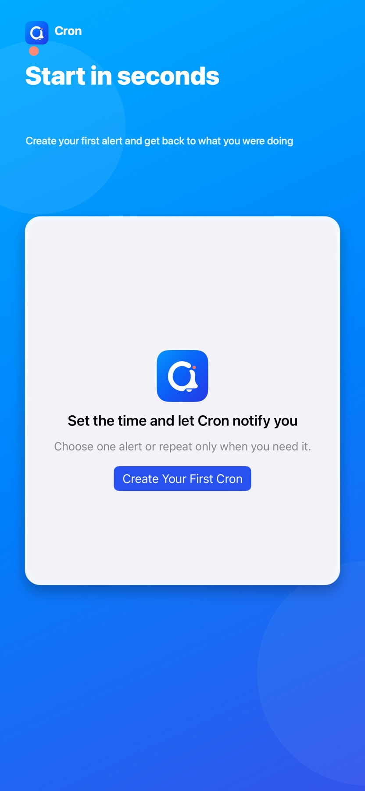

Simple alert
Set it.
Get notified.
Add a name, choose when, and Cron will notify you. Use it once, or repeat only when you need it.

- 3 quick stepsname time save
- One clear alertright when needed
- Exact next alertbefore you save
- On deviceyour Cron details
Focused by design
One simple job.
Right on time.
Cron holds onto a small but important thing and brings it back at exactly the right time.
-
Name the alert
Write the short message you want to see when the notification arrives.
-
Choose when
Pick the time and confirm the exact next alert before you save.
-
Get notified
Use it once, or repeat by interval, day, or weekday only when the alert needs to come back.
Built for quick alerts
From thought to alert
in a few taps.
The actual screens keep the path short: add the alert, see when it will fire, and move on.




A shorter path
Three steps.
Then move on.
Cron makes the next alert predictable, then stays out of your way until it is time to notify you.
-
01
Name the alert
Write what you want Cron to remind you about.
-
02
Choose the time
Set one alert, or add repetition only when you need it.
-
03
Save and get notified
Confirm the exact date and time, save, and get back to your day.
Simple and private
Your alerts stay yours.
Cron titles, notes, and schedules stay on your device. Core alert features work offline, and Cron content is never used for advertising. Personalized ads are requested only within your privacy choices.
Cron 2.0
Choose a time.
Get back to life.
Set the alert you need, then get back to what you were doing.
Download on the App Store